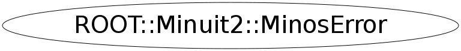

Function Members (Methods)
public:
| ~MinosError() | |
| bool | AtLowerLimit() const |
| bool | AtLowerMaxFcn() const |
| bool | AtUpperLimit() const |
| bool | AtUpperMaxFcn() const |
| bool | IsValid() const |
| double | Lower() const |
| bool | LowerNewMin() const |
| const ROOT::Minuit2::MnUserParameterState& | LowerState() const |
| bool | LowerValid() const |
| double | Min() const |
| ROOT::Minuit2::MinosError | MinosError() |
| ROOT::Minuit2::MinosError | MinosError(const ROOT::Minuit2::MinosError& err) |
| ROOT::Minuit2::MinosError | MinosError(unsigned int par, double min, const ROOT::Minuit2::MnCross& low, const ROOT::Minuit2::MnCross& up) |
| unsigned int | NFcn() const |
| pair<double,double> | operator()() const |
| ROOT::Minuit2::MinosError& | operator()(const ROOT::Minuit2::MinosError& err) |
| ROOT::Minuit2::MinosError& | operator=(const ROOT::Minuit2::MinosError&) |
| unsigned int | Parameter() const |
| double | Upper() const |
| bool | UpperNewMin() const |
| const ROOT::Minuit2::MnUserParameterState& | UpperState() const |
| bool | UpperValid() const |
Class Charts
{kind=link}
{kind=link}
{kind=link}
{kind=link}

Function documentation
MinosError(unsigned int par, double min, const ROOT::Minuit2::MnCross& low, const ROOT::Minuit2::MnCross& up)
{}MinosError& operator()(const ROOT::Minuit2::MinosError& err)
std::pair<double,double> operator()() const
double Lower() const
return -1.* LowerState()
double Upper() const
return UpperState()